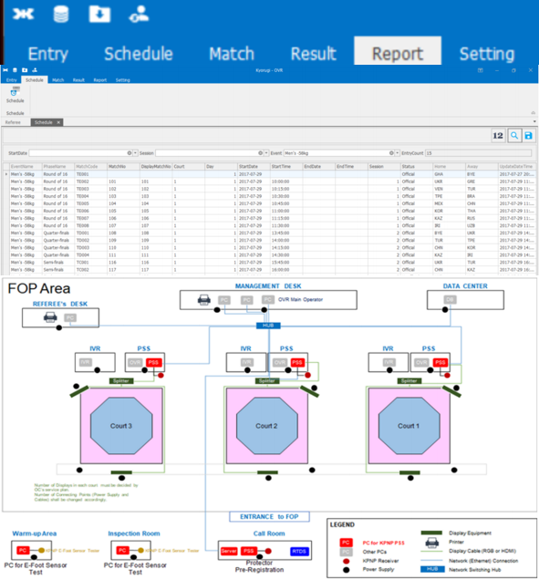
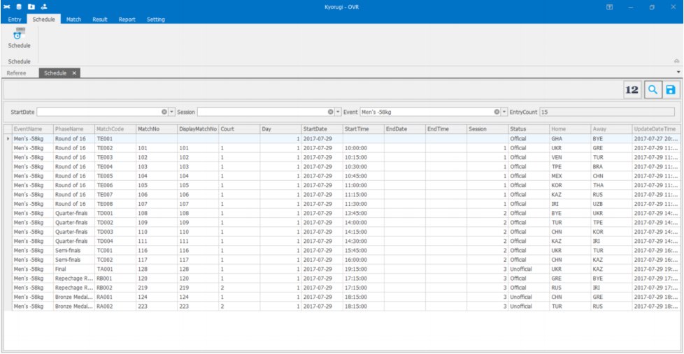
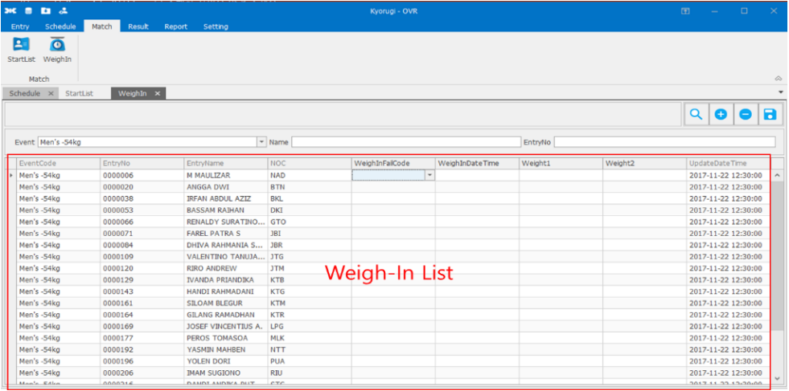

모든 수치는 실제 운영 결과입니다. 각 건 끝에 포워딩 업무에 옮긴다면 어디부터 보겠는지 적었습니다.
업무 프로세스와 시스템 표준화
170개국 규정을 설정값으로 바꾼 글로벌 운영 시스템 0 to 1
2024 파리올림픽 태권도 운영 서비스(OVR) / ㈜오앤 / 총괄 PM
문제
- 나라마다 규정이 달라 운영진이 계체와 대진, 스케줄을 수기로 맞추던 구조
- 규정이 바뀔 때마다 시스템을 고쳐야 해 변경 비용이 국가 수만큼 늘어나는 상태
접근
- 20종이 넘는 운영 규정을 설정값 기반 확장 분류 체계로 설계해 시스템 수정 없이 설정만 바꾸도록 변경
- 규정 유형별 기본값을 제공하고 커스텀 유형은 국제 성적 미집계로 분리해 기준이 섞이지 않게 처리
- 화면기획서와 정책정의서, IA, ERD, API 명세를 직접 작성해 비즈니스 로직을 문서로 고정
실행
- 디자인과 프론트엔드, 백엔드, 퍼블리싱, 기획 5개 팀 14명을 직접 채용하고 총괄
- 세계태권도연맹과 파리올림픽 조직위, 몽골 정부와 정책을 조율하고 요구사항을 영문으로 반영
- 개발팀장 공백이 두 번 생겼을 때 ERD와 API, 연동 프로토콜을 직접 재설계해 일정을 지킴
파리올림픽 공식 채택연 이용자 약 100만 명운영 수작업 80% 자동화운영비 70% 절감일정 지연 0건
구축 후 화면
 대회 운영 메인 화면
대회 운영 메인 화면
 참가자 목록 관리
참가자 목록 관리
 경기 스케줄 조정
경기 스케줄 조정
구축 전 수기 운영 화면

구버전 메인 화면

구버전 스케줄 수기 관리

구버전 계체 관리
포워딩에 옮긴다면 국가별로 다른 통관 서류와 운임 규칙을 코드가 아니라 설정으로 들고 있게 만드는 일부터 보겠습니다. 국가를 하나 더 붙일 때 드는 비용이 줄어듭니다.
시스템 연계와 데이터 정합성
외부 시스템 네 곳 연동 설계와 명세 재정비
RTDS, GMS, PSS, IVR 연동 / ㈜오앤 / 연동 설계와 검증
문제
- 외부 시스템마다 파라미터명과 데이터 형식이 달라 같은 값을 서로 다르게 부르던 상태
- 공식 연동 문서가 오래되어 실제 응답과 맞지 않아 개발이 반복해서 막힘
접근
- 네 시스템의 연동 프로토콜을 분석하고 파라미터명을 자사 기준으로 매핑해 체계화
- 기관 담당자와 직접 협의하고 Postman 호출로 값을 하나씩 검증한 뒤 API 명세를 다시 작성
실행
- 송신과 수신, 실패 시 재처리 경로를 데이터 흐름 문서로 정리해 운영 조직에 인계
- Selenium과 Python, React와 Playwright로 QA 자동화를 붙여 회귀 검증을 자동화
연동 구간 장애 없이 운영테스트 커버리지 70% 이상
포워딩에 옮긴다면 선사와 항공사, 통관 시스템이 보내는 코드와 단위를 한 장의 매핑표로 먼저 세우겠습니다. EDI와 API가 섞여 있을수록 기준표가 먼저 있어야 합니다.
데이터 정합성과 품질 관리
시스템 간 데이터 자동 대조와 자동 수정
BMW 워런티플러스와 DMS / ㈜씨앤디팩토리 / 로직 재설계와 자동 점검 구축
문제
- 두 시스템의 계산 기준이 달라 월 마감마다 사람이 숫자를 맞추는 대사 작업이 반복
- 자사 투입만 월 3시간이고 유관 조직까지 합치면 월 8시간 이상이 들어가던 업무
접근
- 40개가 넘는 정산 칼럼의 계산 로직을 전수 조사해 중복과 누락, 기준 불일치를 유형화
- 산정 기준을 정책 단위로 다시 정의하고 예외 케이스를 별도로 분리
실행
- 두 시스템 사이 API 통신 데이터의 정합성을 자동 확인하고 어긋난 값을 자동 수정하도록 구성
- 월 마감에만 보던 점검을 상시 실행으로 바꿔 이상이 먼저 보이게 변경
데이터 불일치 100% 해소대사 업무 제거관련 오류 50% 감소
 정산 데이터 정합성을 다룬 운영 관리 화면
정산 데이터 정합성을 다룬 운영 관리 화면
포워딩에 옮긴다면 오더와 선적, 정산 데이터가 시스템마다 어긋나는 구간을 먼저 찾아 상시 점검으로 돌리겠습니다. 마감 때 발견하면 이미 늦습니다.
반복 서류와 운영 업무 자동화
반복 업무 자동화 14종과 효과 산정
㈜씨앤디팩토리 / BMW 애프터세일즈와 커머스 브랜드 / 과제 발굴과 직접 구현
문제
- 담당자가 매일, 매주, 매월 같은 서류와 리포트를 손으로 만들던 상태
- 어느 업무에 몇 시간이 들어가는지 조직 안에 숫자가 없어 무엇부터 고칠지 정하지 못함
접근
- 현업 옆에서 업무를 관찰하고 소요 시간을 직접 실측해 과제를 정의
- 반복성과 정책 명확성, 효과 크기, 지속 사용성 네 기준으로 선별하고 못 넘기면 착수하지 않음
- 판단 기준이 정책으로 고정된 업무라 규칙으로 구현해 비용과 정확도를 함께 확보
실행
- Python과 VBA, Selenium으로 직접 구현하고 실제 운영 데이터로 검증
- 승인은 전부 자동, 반려만 사람이 최종 확인하는 구조로 설계해 책임 소재를 남김
14종 전건 운영 안착연 3,000시간판정 정확도 100%개입률 약 0.25%
 승인과 반려를 자동 판정하던 관리 화면
승인과 반려를 자동 판정하던 관리 화면
 주간과 월 마감 리포트를 자동 생성한 운영 화면
주간과 월 마감 리포트를 자동 생성한 운영 화면
포워딩에 옮긴다면 오더 등록과 선적 정보 입력, 서류 작성 중 빈도와 소요 시간이 이미 고정된 업무부터 보겠습니다. 효과를 몇 주 안에 숫자로 보일 수 있는 자리입니다.
대외 파트너 시스템 연계 총괄
외부 솔루션 5종 비교 선정과 연동 컨트롤 타워
다우데이타 셀러포탈 / ㈜씨앤디팩토리 / PM
문제
- 주문과 배송, 정산, 계약을 한 흐름으로 묶으려면 영역마다 외부 솔루션이 필요한 상황
- 선정 기준이 없으면 데모 인상으로 결정돼 비용과 일정이 뒤에서 흔들림
접근
- 배송추적과 PG, 알림톡, 전자계약, 이메일 영역별 후보를 기능과 연동 난이도, 비용 기준으로 비교해 선정
- 각 사와 연동 규격을 협의한 뒤 개발, 스테이징, 운영 환경별 검증 절차를 문서로 고정
실행
- 연동 컨트롤 타워로 일정과 이슈를 한곳에서 관리하고 고객사 데일리 미팅과 내부 주간 미팅을 운영
- 정보보안팀과 협업해 보안 요건을 설계 단계부터 반영
외부 솔루션 5종 연동 에러 0건3개월 안에 런칭
포워딩에 옮긴다면 파트너를 고를 때 데모 대신 기능과 연동 난이도, 운영 비용을 같은 표에 올려 비교하고, 계약 전에 환경별 검증 절차를 먼저 적어 두겠습니다.
운영 가시화와 보고 체계
운영 데이터 통합 대시보드와 경영진 보고
㈜씨앤디팩토리 / 데이터 통합과 지표 설계
문제
- 진척과 성과 데이터가 여러 도구와 채널로 나뉘어 한 번에 보이지 않던 상태
- 보고 시점마다 사람이 손으로 모아 숫자가 매번 달라짐
접근
- Jira와 Flow 로그를 수집해 요구사항별 진척과 지연, 이슈를 정량으로 추적
- 지표 산정식과 데이터 출처를 공개해 팀이 같은 숫자를 보고 논의하도록 구성
실행
- 경영진에는 산정 근거와 기대 효과를 수치로 보고해 도입을 협의하고 전사에 적용
- 개발자 우려에는 데이터 출처와 계산식을 공개한 뒤 지표를 함께 수정해 합의
지연과 누락 80% 감소처리량 150% 증가전사 도입
 Jira 로그 기반 진척 관리 화면
Jira 로그 기반 진척 관리 화면
 전사 운영 칸반 보드
전사 운영 칸반 보드
 운영 성과 통합 대시보드 실제 화면
운영 성과 통합 대시보드 실제 화면
포워딩에 옮긴다면 운송 구간별 지연과 서류 반려, 비용 차이를 한 화면으로 모으고 산정식을 공개하겠습니다. 보고서가 아니라 같은 화면을 보게 만드는 쪽이 빠릅니다.